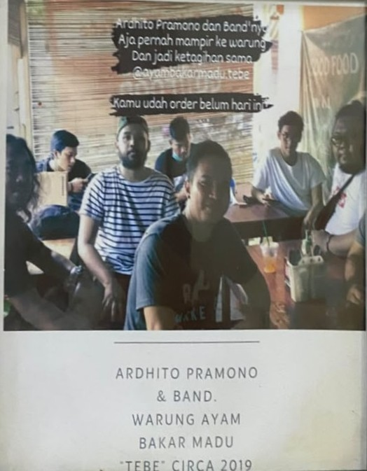

Kelezatan Autentik Ayam Bakar Madu Tebe
Menghadirkan cita rasa bumbu bakar madu khas yang meresap sempurna sejak tahun 2012. Dipanggang dengan penuh ketelitian untuk menyajikan hidangan hangat, gurih, dan manis alami bagi seluruh pelanggan di Yogyakarta.

Kenali Ayam Bakar Madu Tebe
Jelajahi perjalanan sejarah, daftar menu lengkap, hingga tata kelola UMKM kami
Sejarah & Jejak Lokasi
Berdiri sejak tahun 2012 di belakang Universitas Atma Jaya Yogyakarta hingga menetap di Jl. Tambak Bayan 8 No. 8 sejak tahun 2019.
Produk & Daftar Menu
Nikmati Ayam Bakar Madu, Lele Bakar, Usus & Kulit Bakar, Tempe Tahu, Nasi Uduk, Paket Nasi Box, serta aneka minuman segar.
Profil & Struktur Organisasi
Lihat identitas resmi UMKM beserta bagan struktur organisasi yang menjaga kualitas produksi dan pelayanan pelanggan.
Testimoni Pelanggan
Ulasan dan pengalaman bersantap para tokoh dan pelanggan di Ayam Bakar Madu Tebe

Nex Carlos
Food Vlogger"Bumbu bakaran madunya benar-benar meresap sampai ke dalam daging ayamnya. Perpaduan rasa manis madu, gurih rempah, dan sambalnya sangat pas di lidah. Salah satu kuliner ayam bakar di Yogyakarta yang wajib dicoba!"

Ardhito Pramono
Musisi & Aktor"Suasananya hangat dan cita rasa makanannya terasa sangat autentik. Ayam bakar madu serta lauk pendamping seperti kulit bakarnya disajikan dalam keadaan hangat dengan kualitas rasa yang terjaga dengan baik."

Natasha Wilona
Aktris"Suka sekali dengan tekstur daging ayamnya yang lembut dan tidak kering saat dibakar. Olesan madunya memberikan aroma khas yang menggugah selera, apalagi dinikmati bersama es jeruk segar."

Vania, Farah, Tiara
Mahasiswa UPN Jogja"Jadi tempat makan favorit kami setelah selesai kuliah! Porsinya pas, harganya sangat ramah di kantong mahasiswa, dan perpaduan ayam bakar madu dengan nasi uduk serta sambalnya selalu bikin ketagihan."
Kontak, Sosial Media & Lokasi
Hubungi kami untuk pemesanan harian, acara khusus, maupun kunjungan langsung ke kedai
Alamat Kedai
Jl. Tambak Bayan 8 No.8, Janti, Caturtunggal, Kec. Depok, Kabupaten Sleman, Daerah Istimewa Yogyakarta 55281
Telepon & Pemesanan Partai Besar
Ingin melakukan pemesanan dalam partai besar? Hubungi kami di nomor berikut: